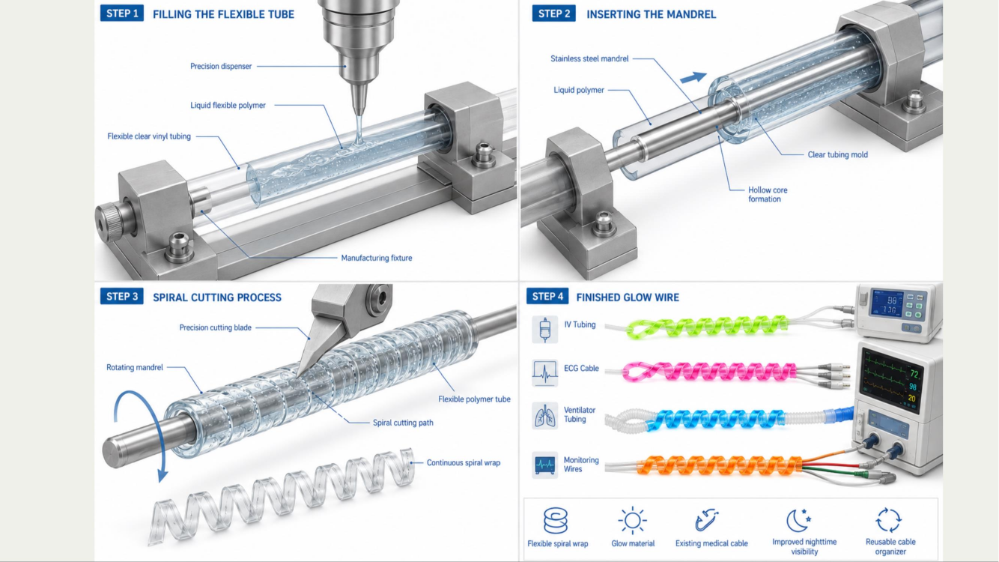

Our Product
Our Product
Clinical-grade, photoluminescent silicone wraps that slide over existing medical wires and tubing — engineered for visibility, durability, and safety.

Each GlowLine wrap is color- and texture-coded to a specific line type, so clinicians can identify a line by sight or by touch — even in complete darkness or during high-stress, low-visibility triage.
Why It Works
The phosphor-infused material charges naturally under ambient room light throughout the day — no batteries, no charging stations.
Once the lights go down, wraps emit a steady glow for hours, lasting through a full overnight shift.
Color-coded, texture-coded wraps let nurses confirm a line visually or by touch in seconds.
How It's Made
Each wrap is cast and spiral-cut in-house from a flexible, clinical-grade phosphor silicone blend, then fitted around a stainless steel mandrel to form a reusable spiral that wraps around existing lines without any adhesive.

Built for Clinical Environments
Maximum photoluminescent visibility engineered for zero-light clinical environments.
Rapid recognition through standardized medical color-coding protocols.
Engineered tactile patterns for non-visual identification during high-stress bedside setups.
Clinical-grade materials designed to wrap around existing medical lines to professional safety standards.
Sold in packs of 5 at a $75 retail price point. Most hospitals outfit an average of 130 rooms — request a quote for your facility's exact needs.
Request a Quote